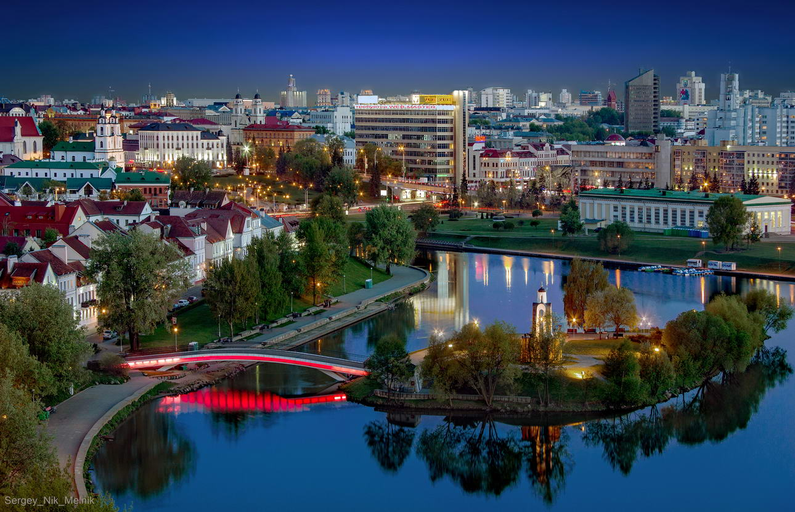

ЛЕГЕНДЫ
Городские легенды:
чем пугают себя минчане
Что такое городская легенда?
Городская легенда – это часть современного фольклора, передаваемого из уст в уста: смешной, страшный, но непременно невероятный случай, который, считается, обязательно произошел в реальности. От слуха городская легенда отличается тем, что в ней есть сюжет, действующие лица, всяческие мелкие подробности. Часто городская легенда является предупреждением о страшной опасности.
Современные легенды вышли за рамки устного народного творчества и приобрели глобальный масштаб, потому что им помогают не только телефоны, но и факсы, Интернет и спутниковая связь.
Не все городские легенды являются неправдой, но даже если байка изначально имела основой реальный случай, за несколько «кругов» пересказа она обрастает просто космическими подробностями.
Смыв денег
Первый общественный туалет Минска был построен в 1912 году в Александровском сквере. Проектировал его архитектор, который перед этим не получил денег за проект большого и роскошного дома одного пана. Сражаться с влиятельным и жадным заказчиком ремесленник не стал, но обиду не забыл. Когда дом богатея был уже построен, а мастер получил от городских властей заказ на строительство отхожего места, туалет стал миниатюрной копией панского дома, а над паном потешалась вся страна. Правда, что стало непосредственно с панским домом - история умалчивает, его никто и никогда не видел. Сегодня в бывшем здании первой общественной уборной Минска действует филиал кассы театра имени Янки Купалы и лавка белорусских сувениров.

В этом основная особенность городских легенд - в них легко верить, но никто не сможет проверить правдивость истории. Потому что все они начинаются с «тесть зятя брата друга бабушки племянника моего директора своими глазами видел...»
Крокодил в Свислочи
Сначала легенда про крокодила была легендой про сома. Мол, в одно особо жаркое лето в Свислочи завелся огромный сом, который как-то утащил под воду и съел собаку. Через какое-то время сом невероятным образом перевоплотился в крокодила, которого выпустил в речку новый белорусский, устав от такого домашнего любимца. А еще через круг жители города узнали, что крокодил тот был на самом деле чучелом, которое украли из музея шутники и выпустили поплавать в реку в разгар пляжного сезона. А отдыхающие не испугались, вызвали милицию, которая крокодила к чертям расстреляла. Потом невинно убиенное чучело из речки выловили и обратно в музей повесили, и теперь, если присмотреться, на нем можно увидеть дырки от пуль.
Кстати, этот свислочский крокодил с завидным постоянством появляется то в одной, то в другой белорусской реке. Плавал он и в Мухавце, и в Днепре, и в Двине.
Шприцы со СПИДом
Результатом этой городской легенды стала истерия, охватившая Минск на целое лето несколько лет назад. По городу прокатилась волна слухов о том, что группа больных СПИДом людей мстит за свою незавидную долю, вкалывая свою зараженную кровь посетителям ночных клубов и сопровождая это запиской «Теперь ты один из нас. Добро пожаловать в СПИД!». Тем, кто в ночные клубы не ходил, тоже было несладко, потому что злобные СПИД-террористы оставляли иголки с кровью и в креслах кинотеатров, и даже в общественном транспорте. Особо опасным считался маршрут автобуса № 100. И никого не убеждало, что такие байки уже лет тридцать гуляют по Северной Америке и Западной Европе, - даже заядлые тусовщики временно покинули свои излюбленные места танцев и возлияний.
Публичный дом на факультете журналистики
Когда Институт журналистики БГУ был еще факультетом и располагался в здании на улице Московской, часть занятий проходила в небольшом краснокирпичном доме на улице Мясникова, именуемом в студенческой среде «мясом». Так вот про это невзрачное строение существует легенда, гласящая, что до революции там располагался бордель. После того как именем нравственности и морали все публичные дома закрыли, в домик якобы въехал НКВД. Во время войны НКВД сменило гестапо, а уж потом в здание снова пришли представители древнейшей профессии - правда, не первой, а второй.
Похищение Паниковского
Скульптуру мальчика с лебедем, расположенную в фонтане неподалеку от легендарного «дворцового» туалета, народ давно окрестил Паниковским (за любовь литературного героя к гусям), а сквер вокруг - Паниковкой. На зиму скульптуру прячут в жестяной «скворечник», чтобы не мерзла и не портилась. Так вот есть легенда, что в одну из зим паниковские панки похитили бронзового мальчика с лебедем - он стоял дома у одного из похитителей и служил вешалкой, а ближе к весне памятник вернули на место.
Клон этой легенды - похищение пластиковой фигуры клоуна Рональда МакДональда от одного из ресторанов «МакДональдс». Якобы украли злые минские антиглобалисты пластикового Рональда и распространили по сети снимки издевательств над символом крупнейшего в мире фастфуда. Одна из версий легенды рассказывает о том, что похитили клоуна не антиглобалисты, а народные мстители, потому что в то время работники фаст-фуда не пускали в туалеты всех, а только посетителей заведения. А после похищения Рональда якобы было прислано в администрацию анонимное письмо с предупреждением: не станете пускать людей в туалеты - будете получать по почте части тела клоуна.
Выброс радиации
В прошлом году Минск гудел от слухов об огромном выбросе радиации. Горожане в ужасе звонили друг другу, мамы просили детей не выходить на улицу, детские сады лишились прогулок, все форточки были задраены наглухо, а в аптеках подчистую смели йодсодержащие витамины. Как оказалось, причиной порождения городской легенды были плановые учения МЧС, во время которых инсценировались действия по спасению детей из школы и детсада при выбросе радиации. Дети рассказали о необычном дне родителям, те - друзьям, и буквально за пару часов столица Беларуси покрылась толстым слоем паники, которая продолжалась целую неделю, несмотря на уверения СМИ и служб радиационного контроля о том, что все в порядке. Еще бы - когда взорвалась Чернобыльская АЭС, все чиновники тоже говорили о полном порядке, так что теперь белорусы ни за что не поверят в радиационную безопасность.
Смертельная кровать в реанимации
В реанимации одной из городских больниц была смертельная кровать - каждый больной, которого на нее укладывали, умирал утром. Врачи - люди несуеверные, но тут никак не могли возражать против очевидного: привезут человека, реанимируют, а утром тот умирает. Когда за палатой установили наблюдение, оказалось, что в смерти многих людей виновата санитарка, которая каждое утро выдергивала провода аппарата, производящего искусственную вентиляцию легких, - они ей мешали наводить чистоту...
Счастливые и несчастливые скульптуры
Бронзовые жители Минска обрастают легендами и приметами практически сразу после появления на улицах. В Михайловском сквере особенно много радостей для любителей поверить во что-нибудь необычное. Говорят, что если одинокий парень посидит на скамейке рядом с Горожанкой, подержит ее за руку и погладит по коленке - в скором времени найдет себе девушку.
А если вложить в пальцы Прикуривающего сигарету, то весь день будет удачный. Но, кстати, про скульптуру прохожего, стреляющего сигаретки, есть и печальная легенда. Говорят, что заказал ее скульптору Владимиру Жбанову один тщеславный кинопродюсер. И, несмотря на увещевания Жбанова по поводу того, что делать себе памятник при жизни - очень плохая примета, настоял на том, чтобы у Прикуривающего было его лицо. Случилось все так, как боялся Жбанов: заказчик умер, не дождавшись завершения работы, и памятник стал посмертным...
Студенты верят в то, что если поболтать с Пушкиным, взирающим на город у гостиницы «Беларусь», перед экзаменом по филологическому предмету, то хорошие оценки обеспечены.
Проклятая речка
О том, что после запаивания речки Немиги в подземные трубы, она стала мстить людям, забирая жизни, слышали многие, и грозовая трагедия на Немиге 30 мая 1999 года этот миф только упрочила.
Еще говорят, что в этом районе фиксируется самое большое количество самоубийств в городе. И как тут не вспомнить о постоянных потопах и автомобильных авариях в этой части Минска.
В принципе, в эту легенду легко поверить, если учесть, что в 1067 году именно на Немиге произошла кровавая резня, в результате которой погибло практически все население Минска - не по фэн-шуй место, как ни посмотри.
Легенды районного масштаба
Легенда Немиги плавно перетекла в более мелкий масштаб - между Малиновкой и Юго-Западом есть зеленая зона, по которой протекает речка, именуемая в народе Мухля. На самом деле когда-то это действительно была речка, называлась она Мышка, но после того, как на ее основе сделали водохранилище, речка обмелела да и вовсе засохла. И теперь, как полагается каждой обиженной речке, мстит горожанам - каждый год в Мухле кто-нибудь тонет. Правда, объясняется это скорее тем, что на берегах водохранилища в летний период горожане устраивают алкогольные пикники и потом в пьяном виде охлаждаются в грязном водоеме без меры.
Легенды районного масштаба есть и в других местах города. В микрорайоне Сухарево гуляет предание, что его отстраивали к пятидесятилетию Победы, поэтому, если посмотреть на него сверху, то дома образуют число 50. Более старая байка относится к району Зеленый Луг - он, мол, с высоты самолетного обзора выглядит как серп и молот.
Последний поезд в метро
Есть две легенды про последний поезд в метро. Одна - про то, что простой человек не должен попадать в запретный мир подземелий, поэтому даже те, кто случайно уехал в депо, например, уснув, про это никогда ничего не помнят. А вторая легенда более мистическая: в полнолуние перед самым закрытием метро на станцию приезжает странный поезд, в котором нет ни пассажиров, ни рекламы на стенах. И тот, кто в этот поезд зайдет, будет в нем всю жизнь кататься, причем не только по минскому метро, а и по московскому, и ленинградскому. Похожая история есть про последний оборот колеса обозрения в парке Горького: кто на колесе вечером перед полнолунием покатается, на всю жизнь там останется.
Если вы знаете какие-нибудь минские современные легенды и мифы - делитесь ими через кнопку "Рассказать легенду".